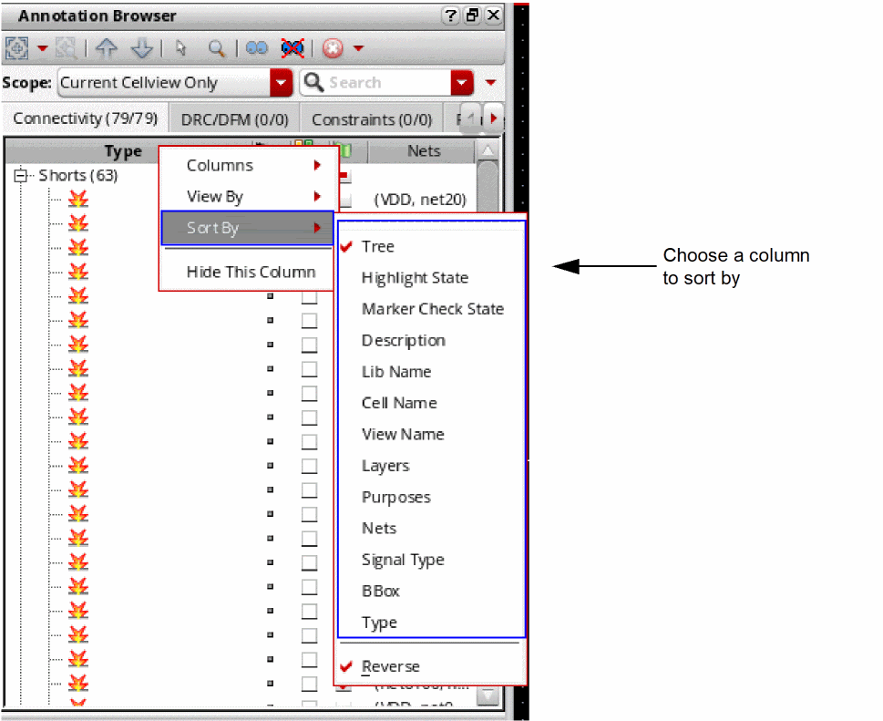
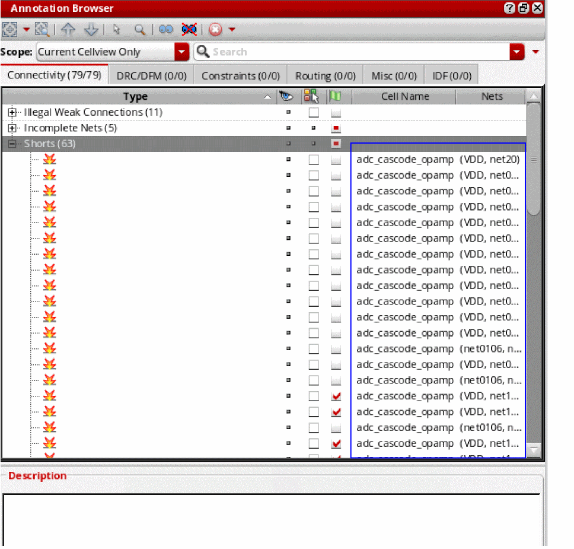

Sorting Markers in the Annotation Browser
To sort the markers in the browser pane by a different column than the one currently set:
- Right-click the header of the column for which you want to sort the markers.
-
Choose Sort By from the shortcut menu and then select the column by which to sort the markers. For this example, let us sort by Cell Name.
The table entries are re-sorted based on your selection.
 - To sort the entries by a different column, repeat steps 1 and 2 for the column in question.
To sort markers by Highlight State or Checked State, keeping the Ctrl key pressed, click the corresponding column header. Sorting markers based on highlight color is not supported.
Related Topics
Annotation Browser Shortcut Menus
Annotation Browser Options Form
Filtering Markers in the Annotation Browser
Return to top